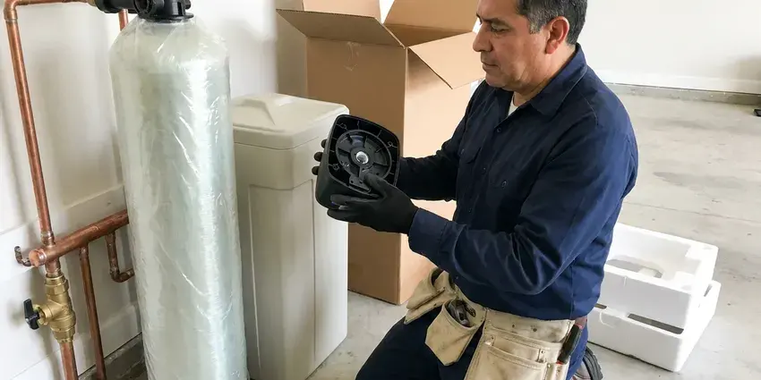
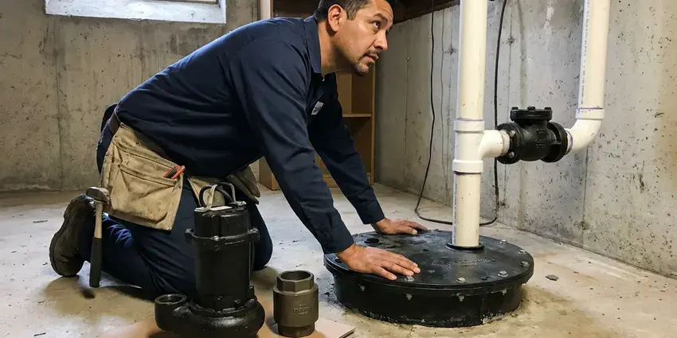

Water Heater Installation in Upland, CA
Our Upland, CA plumbers install water heaters built to handle hard water, hot garages and busy households.
- Old Tank Haul-Away Included
- Permits and Code Compliance
- Licensed Plumbers
- Clear Pricing

Schedule Your Water Heater Installation in Upland, CA.
Don't wait for cold showers, contact FKM Plumbing for a professional assessment and installation.
Professional Water Heater Installation Services in Upland, CA
When it is time for a new water heater in your Upland, CA home, FKM Plumbing is here to help. We provide complete installation services, guiding you through selecting the best model for your needs and budget. From traditional tank models to modern tankless units, our team handles every step of the installation process with professionalism and care.
Our expertise includes:
- Precise gas and electrical connections for safety.
- Gas and electric water heater setup and connection.
- Careful sizing for optimal hot water capacity.

Additional Plumbing Installation Services in Upland, CA
We install water heaters, pumps, lines, and fixtures across Upland, CA with precision workmanship that meets every local code.



Upland water softener installation specialists


Customers
Why Choose FKM Plumbing for Water Heater Installation in Upland, CA?
We put safety and efficiency in every water heater installation, ensuring your new unit operates reliably from day one. Our team is familiar with Southern California building codes and specific requirements.
- Fast Service, Many installations are completed the same day you call.
- Local Expertise, We understand the unique plumbing challenges and water conditions in Southern California, providing tailored solutions for your home.
- Transparent Pricing, We provide clear, upfront estimates so you know the cost before any work begins.
Citywide Coverage
FKM Plumbing proudly serves every neighborhood in Upland and the surrounding areas for all water heater installation needs. Whether you're in an older district or a newer subdivision, our plumbers are ready to provide timely and professional service.
Experienced Team
Each plumber at FKM Plumbing is highly trained in the details of water heater installation, understanding factors like water pressure, venting requirements and fuel sources. Their expertise means your new water heater will perform optimally for its lifespan.
Safety-First Approach
Safety is our top priority in every water heater installation we perform. We rigorously adhere to all local Southern California plumbing and electrical codes, ensuring proper venting, gas line connections and pressure relief valve installations to prevent hazards.
Trusted Certified Upland Plumbing Services Professionals
At FKM Plumbing, we take pride in providing licensed, certified plumbing services throughout Upland, CA. Backed by leading industry credentials, our experienced plumbers combine technical skill with genuine customer care. Whether it is repair, installation, or maintenance, we follow strict safety and quality standards to deliver long-lasting results you can trust.
Call Us Now PHCC Plumbing Contractor Recognition
PHCC Plumbing Contractor Recognition Better Business Bureau (BBB) Accreditation
Better Business Bureau (BBB) Accreditation Angi Certified Pro
Angi Certified Pro ISO 9001 Quality Management Certification
ISO 9001 Quality Management CertificationDependable Water Heater Installation Services in Upland, CA
Electric Water Heater Installation in Upland, CA
Electric water heaters are common in homes without natural gas access or where homeowners prefer electric appliances. Our installation process for electric units in Upland includes verifying correct electrical wiring, breaker sizing and secure connections. We ensure that the new unit meets all electrical safety standards and local building codes. While electric units can have higher operating costs than gas in some areas, they are often simpler to install and maintain. We'll help you select an efficient model that fits your budget and needs.

Tankless Water Heater Installation in Upland, CA
Tankless water heaters provide on-demand hot water, saving energy and space, and they are increasingly popular in Southern California homes. Our experts specialize in installing these highly efficient units, making sure of proper gas line sizing or electrical service upgrades if needed. We also address venting requirements, which are often different from traditional units. While the upfront cost can be higher, the long-term energy savings and endless hot water supply make them an attractive option for many homeowners in Upland. We'll help you choose the right model for your specific needs.
Major Brand Water Heater Installation in Upland, CA
FKM Plumbing is experienced in installing all major water heater brands, including Rheem, Bradford White, A.O. Smith and Noritz, for residents across Upland, CA. Each brand offers different features, efficiencies and warranty options. Our plumbers are knowledgeable about the installation requirements for each manufacturer, making sure your warranty remains valid and the unit performs as designed. We can help you navigate the options and choose a trusted brand that aligns with your budget and hot water needs, providing expert installation regardless of the model.
Attic and Closet Water Heater Installs in Upland
Some local homes have water heaters in attics or interior closets. These installs require careful planning for access, drain pans and relief line routing. Attic temperatures can swing a lot with the seasons, so we take extra steps to protect connections. We install drain pans with proper drain lines to protect ceilings. If relocation makes sense, we can move the heater to a safer spot.
Commercial Water Heater Installation in Upland
Businesses in Upland have demanding hot water needs, often requiring larger, more heavy-duty commercial-grade water heaters. Whether it's for a restaurant, salon or office building, FKM Plumbing provides dedicated commercial water heater installation services. We understand the complexities of commercial systems, including higher BTU requirements, venting for larger units and compliance with commercial codes. Our team works efficiently to minimize disruption to your business operations during the installation process, ensuring your commercial property has a reliable hot water supply.
Electric Tank Water Heater Installation in Upland, CA
Electric tank water heaters are common in homes without natural gas service. We install models with the correct voltage and breaker size for your electrical panel. These units do not need venting, which allows more flexible placement. We also install a drain pan when the heater is in a closet or attic. Electric models are simple, dependable and quiet.
Traditional Tank Water Heater Installation in Upland
Most homes still rely on traditional tank water heaters for their hot water needs. These units store and heat a large volume of water, making them a reliable choice for families. Our installation service includes proper sizing based on your household's demand, ensuring adequate hot water even during peak usage. We handle all connections, including gas lines or electrical wiring, and ensure correct venting to meet Upland safety codes. Our team also disposes of your old unit responsibly, making the process hassle-free for you.

Emergency Water Heater Replacement in Upland, CA
A sudden water heater failure can be a major inconvenience, especially since hot water is essential year-round. If your water heater bursts, leaks badly or completely stops working, FKM Plumbing offers emergency replacement services in Upland. We put first urgent installations to restore your hot water quickly and efficiently. Our plumbers arrive with the necessary tools and common replacement units, or we can source specific models fast. We aim to minimize damage and get your home back to normal with little delay, even if it's after hours.
Water Heater Installation Near Me in Upland, CA
When your hot water heater needs replacing, choosing a local contractor like FKM Plumbing means you get personalized service and plumbers familiar with Upland plumbing. We're dedicated to being your trusted neighborhood provider for all your water heater installation needs.
Our team understands the water conditions and home layouts in the area. We recommend units that hold up to local water and where they will be installed. You get a professional installation and clear advice on maintenance.
FKM Plumbing at a Glance
- Fully licensed plumbing team covering Upland, CA
- Same-day appointments and 24/7 emergency response
- Upfront, flat-rate pricing before work begins
- 4.8-star rated by 754+ Southern California customers
Upland Map
Upland Information
- Population
- 78,699
- Area codes
- 909/626/951
- Service area
- Upland and communities within 40 miles
- Nearby
- Rancho Cucamonga, Ontario, Pomona, Chino
A well-functioning water heater is essential for year-round comfort in Upland, CA, and proper installation ensures it handle seasonal temperature shifts and local water conditions without premature failure.
Expert Services
Trust our professionals for reliable FKM Plumbing solutions in Upland, CA.
Our Specialized Plumbing Services in Upland, CA
At FKM Plumbing, we provide a complete range of plumbing services across Upland, CA. From leak detection to full system installations, our team ensures fast, precise, and affordable service for both residential and commercial properties. Explore our core services below:


How Our Water Heater Installation Process Works in Upland, CA
Our water heater installation process is fast, safe and designed to restore hot water fast.
Request a Quote
Call us at (213) 871-0701 to discuss your water heater needs and schedule an on-site assessment. We'll provide a clear quote for the entire installation.
Site Assessment
Our plumber will visit your Upland home to evaluate your current setup, discuss options and help you select the best water heater for your specific requirements.
Expert Installation
We handle the removal of your old unit and professional installation of the new one, including all necessary connections, venting and safety checks.
Frequently Asked Questions About Water Heater Installation in Upland
The cost of water heater installation in Upland, CA usually ranges from $1,200 to $3,500, depending on the type of water heater (tank vs. tankless), its capacity, fuel type (gas or electric) and any necessary plumbing or electrical modifications. We provide a detailed, upfront quote after assessing your particular needs.
The correct size water heater depends on the number of people in your household and your peak hot water demand. For tank units, a 40 to 50 gallon tank is common for 2 to 4 people, while larger families might need 60 to 80 gallons. For tankless units, it is about flow rate (GPM) and temperature rise. Our plumbers will assess your needs to recommend the right size.
A standard tank replacement typically takes two to four hours. Tankless installs or relocations can take most of a day.
Common signs that you might need a new water heater include a lack of hot water, rusty or discolored water coming from the hot tap, banging or rumbling noises from the tank, visible leaks around the base of the unit and an age of 10 to 15 years or more. If you notice any of these issues, it is best to have a professional inspection.
A traditional tank water heater typically lasts between 8 and 12 years with proper maintenance. Tankless water heaters often have a longer lifespan, ranging from 15 to 20 years, thanks to their durable components and on-demand operation.
While it might seem like a DIY project, water heater installation involves working with gas lines, high voltage electricity and water connections, all of which carry significant risks if not handled correctly. Improper installation can lead to leaks, gas explosions, electrical fires and carbon monoxide poisoning. It can also void your warranty, and local codes often require a licensed plumber for this work.
Most households of two to four people do well with a 40 or 50 gallon tank. Larger families may need a 75 gallon tank or a tankless unit sized by flow rate.
Rusty water, leaks around the base, rumbling noises and running out of hot water quickly are common signs. If your heater is over 10 years old, replacement is often wise.
What People Are Saying About Our Plumbing Experts?

Sofia M.
Two new toilets installed in one visit, no mess left behind, and the tech even adjusted a faucet he noticed was dripping. Fair pricing and really friendly.
Toilet Installation · Eastvale, CA
Mark T.
When our office needed drain cleaning, FKM Plumbing provided quick, reliable service. The plumber arrived on time and made sure every drain flowed perfectly before leaving. Very satisfied.
Drain Cleaning · Upland, CA
Emily R.
I called FKM Plumbing for plumbing repair, and the technician was fast, polite, and thorough. They explained the problem clearly and fixed it the same day. I will definitely hire them again. Highly recommended!
Plumbing Repair · Fontana, CA
Robert G.
The trenchless sewer replacement saved our front yard. They walked us through the camera inspection footage first so we knew exactly what we were paying for.
Sewer Line Replacement · Pomona, CA
Daniel K.
A pipe burst at 11 pm and they actually answered. The plumber showed up within the hour, shut everything down, and had us back to normal the next morning. Could not ask for more.
Emergency Plumbing · Eastvale, CA
Patricia H.
We had a slab leak that two other companies could not find. FKM Plumbing located it in under an hour, explained our options, and the price matched the quote to the dollar.
Slab Leak Repair · Chino, CA